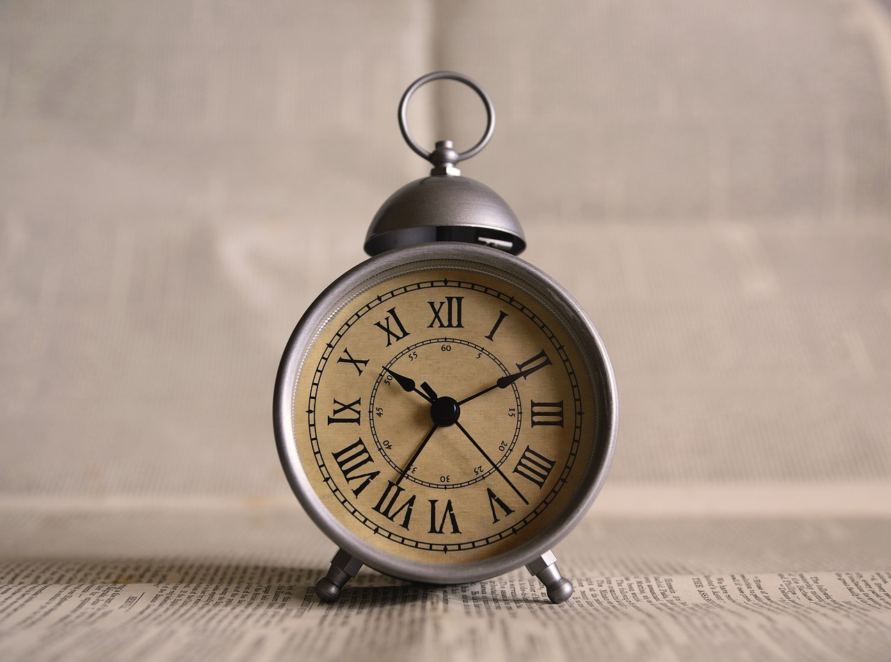

Vycházíme z předpokladu, že některým to nemusí vyhovovat, nedokážou si efektivně naplánovat čas, nedokážou si dát pauzu, kterou by strávili efektivně, například: protáhli se, praktikovali krátkou meditaci, ale místo toho scrollují na sociálních sítích nebo dělají činnosti, které je nerozptýlí od práce a neodpočinou si.
Naše aplikace bude sloužit všem, kteří si chtějí naplánovat pracovní den z domova, co nejefektivnějším způsobem. Pomůže vám nastavit si časové bloky, kdy budete jen pracovat, bude vás upozorňovat a vyzývat k tomu si dát pauzu, nabídne vám činnosti, které v pauze máte dělat, abyste si „aktivně odpočinuli“. Na závěr vás pochválí za dobře odvedenou práci.
